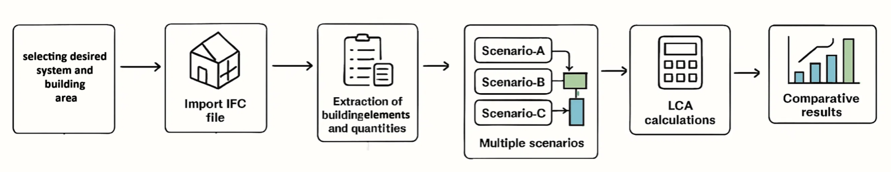

The building sector is a significant contributor to global carbon emissions, with embodied carbon representing an increasingly critical portion of a building's total environmental impact. While Life Cycle Assessment (LCA) is the established method for quantifying these impacts, its complexity and reliance on specialized data often render it inaccessible to non-professionals and those without extensive sustainable engineering expertise. This thesis addresses this accessibility gap by developing a self-built, user-friendly system tool designed to empower early-stage LCA for embodied carbon. The tool simplifies the complex process of environmental assessment, enabling individuals with limited technical backgrounds to make informed, low-carbon design decisions. The methodology involved creating a streamlined LCA logic, integrating standardized environmental data, and developing an intuitive interface. To validate its effectiveness and ease of use, the tool was applied to a case study involving three distinct design scenarios. The successful implementation and testing across these scenarios demonstrate the tool's capability to provide reliable environmental feedback efficiently. This work contributes a practical, accessible solution that empowers a broader audience—specifically non-specialist to engage with and influence the sustainability of the built environment, thereby accelerating the adoption of low-carbon design principles beyond the expert community.
▾